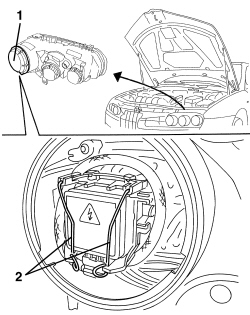
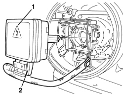
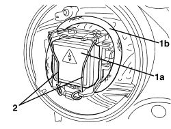

5540B45 GAS DISCHARGE DIPPED/MAIN BEAM HEADLAMP BULB - R.R.
- Path
- Procedures > 55 ELECTRICAL EQUIPMENT > 5540 EXTERIOR LIGHTING > 5540B HEADLAMPS > 5540B45 GAS DISCHARGE DIPPED/MAIN BEAM HEADLAMP BULB - R.R.
- Kind
- repair procedure (removal / refitting; the operation number is the code)
- Applies to
- all engines; all production periods
- Interactive page
- https://sloeber94.github.io/elrnDB/alfa/159/en/#/939004920
Applies to: engines: 1.9 JTS, 2.2 JTS, 3.2 JTS, 1.9 JTD 8V, 1.9 JTD 16V, 2.4 JTD 20V; all production periods
 Removing
Removing
 Refitting
Refitting1. Remove the cover (bayonet mount).
2. Release the bulb retaining clips.

Applies to: engines: 1.9 JTS, 2.2 JTS, 3.2 JTS, 1.9 JTD 8V, 1.9 JTD 16V, 2.4 JTD 20V; all production periods
1. Extract the bulb from the bulb holder.
2. Disconnect the electrical connection for the bulb.

Applies to: engines: 1.9 JTS, 2.2 JTS, 3.2 JTS, 1.9 JTD 8V, 1.9 JTD 16V, 2.4 JTD 20V; all production periods
Refitting
Removing- Check the condition of the bulb and make sure that it is clean.
- Connect the electrical connection for the bulb.
1. Position bulb (1a) in its seat and position the electrical wiring (1b) as shown in the figure.
2. Do up the bulb retaining clips.

Applies to: engines: 1.9 JTS, 2.2 JTS, 3.2 JTS, 1.9 JTD 8V, 1.9 JTD 16V, 2.4 JTD 20V; all production periods
- Refit the cover (bayonet mount).
- Close the bonnet.
- Check that the bulb is working.